읽는 순서를 정리
아이콘 48px, 상품명, 가격, 보유량을 단일 열에 배치했습니다. 선택은 선과 테두리로 표시하고, 살 수 없는 상품도 설명을 읽을 수 있도록 유지합니다.
에디터의 상점 명령창이 아닙니다. 실제 player.html에서 여는 상점의 목록·상품 전시·거래 하단을 하나의 화면으로 정리하고, 키보드 입력과 실제 잔액으로 확인했습니다.
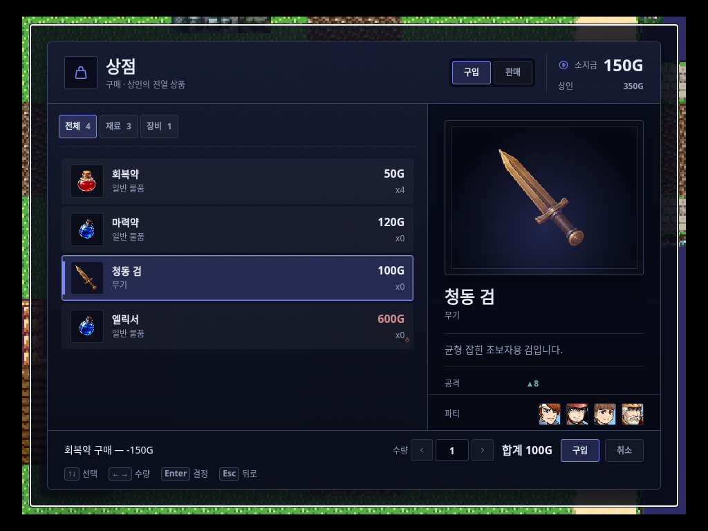
변경 전후 모두 glass-ui 시나리오, glass-ui-qa-v3.json, 시드 1, 1024×768입니다. 이 최소 픽스처의 아이콘 없는 물약은 그대로 두어 UI 변화만 비교합니다. 아래 이미지는 에디터나 제안서 목업이 아닙니다.
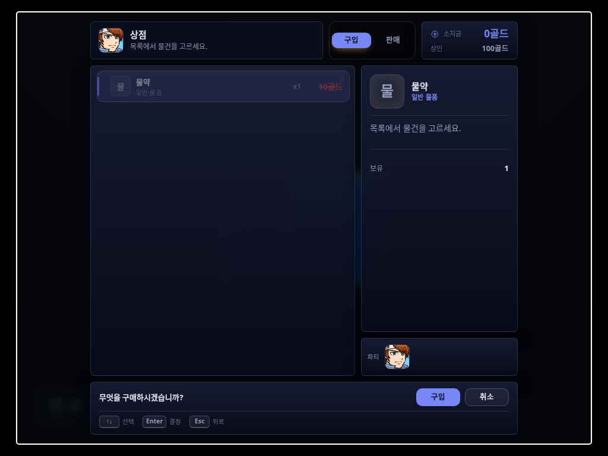
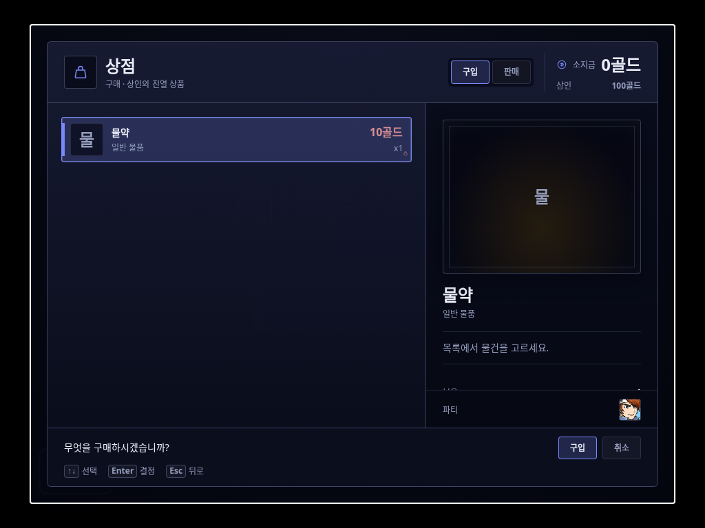
원본 결과: BEFORE 요약 · BEFORE manifest · AFTER 요약 · AFTER manifest. PNG를 누르면 원본 크기로 열립니다.
아이콘 48px, 상품명, 가격, 보유량을 단일 열에 배치했습니다. 선택은 선과 테두리로 표시하고, 살 수 없는 상품도 설명을 읽을 수 있도록 유지합니다.
선택 아이콘을 크게 보여 주고 설명·장비 수치·보유/착용 정보를 함께 놓았습니다. 재료·장비 등 종류별 빛은 시각 구분이며 희귀도 표기가 아닙니다.
파티 리더 얼굴을 상인처럼 쓰던 표식을 지갑 문장으로 바꿨습니다. 실제 파티 얼굴은 ‘파티’ 영역에만 남깁니다.
변경 범위는 CSS 중심입니다. 런타임 CSS·DOM·부품과 DESIGN·위키 5개 파일, +375 / −932줄. 거래 계산·재고 처리·키 컨트롤러는 변경하지 않았습니다. 이 보고서 작업은 QA 스크립트와 로컬 증거·보고서만 추가했습니다.
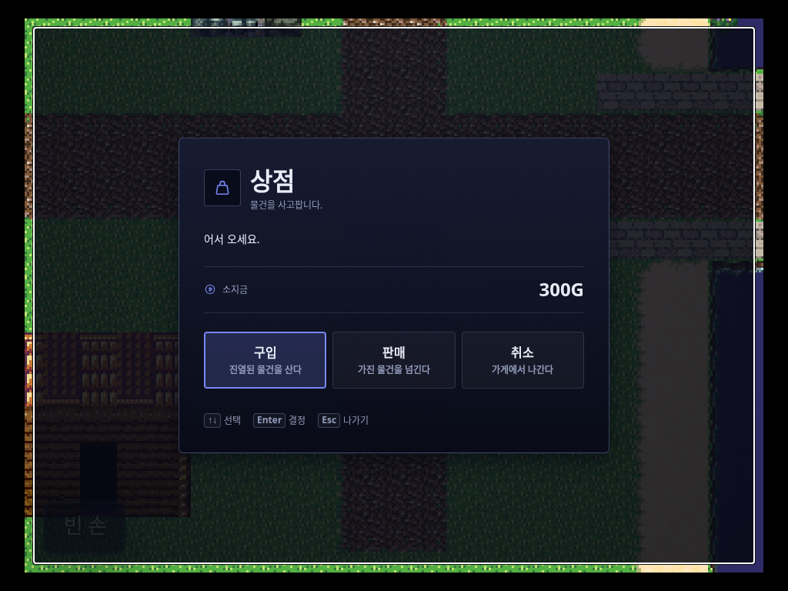
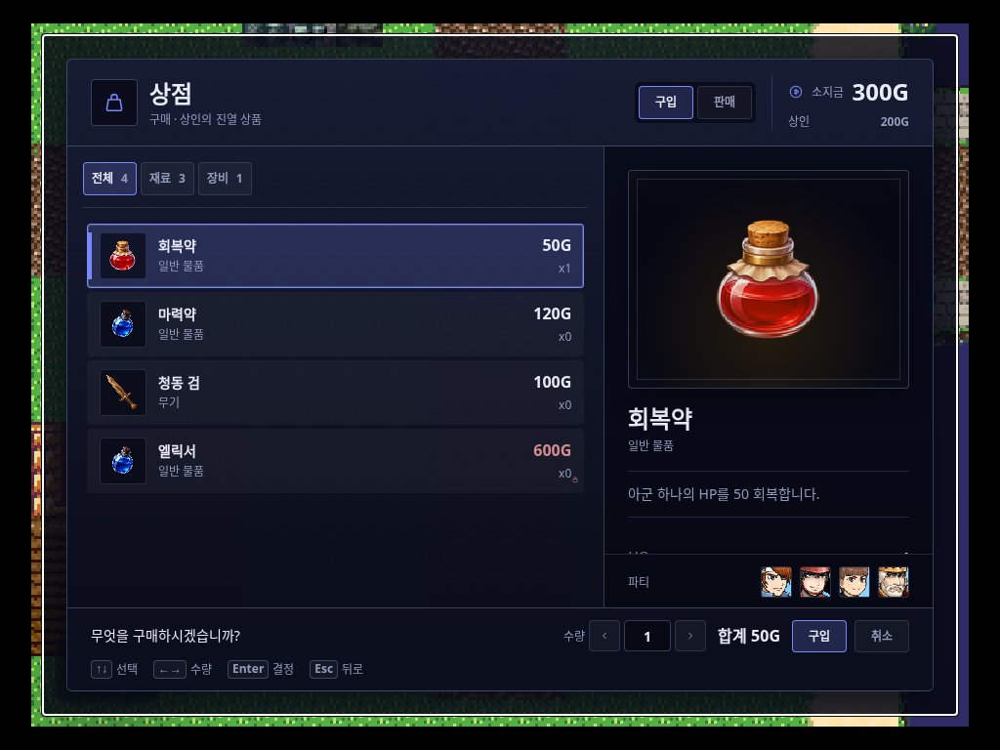
자료 출처 — 풍부한 장면은 기존 test/fixtures/projects/item-runtime-qa-v3.json에서 복제한 QA 전용 구성입니다. 캐릭터·장비·아이템 이미지는 저장소의 기존 리소스입니다. 원본 콘텐츠/DB 쓰기, 원격 콘텐츠, 이미지 생성은 하지 않았습니다. 이전 에디터 제안서는 대상이 달라 사용하지 않았습니다.
1024×768에서 한 번 부팅한 동일 세션을 키보드로 진행했습니다. 각 거래 상태마다 세 크기로 실제 뷰포트를 바꿔 33장을 기록했습니다. 작은 화면에서 별도로 새 게임을 끝까지 플레이했다는 주장은 하지 않습니다.
플레이어의 실제 포인터 차단을 유지했습니다. 마우스 클릭이나 element.click() 우회는 없습니다. 구매/판매 전환은 입구로 돌아가 선택합니다. 테스트 훅은 시작 방향·이벤트 조사·시드 설정과 상태 읽기에만 사용합니다.
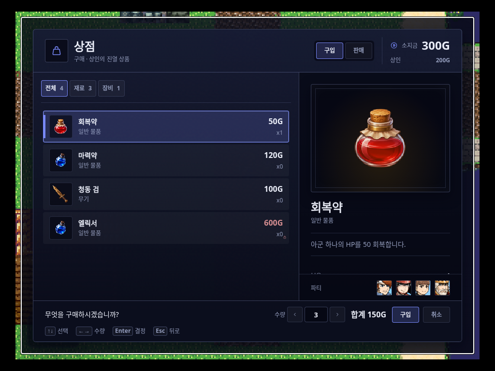
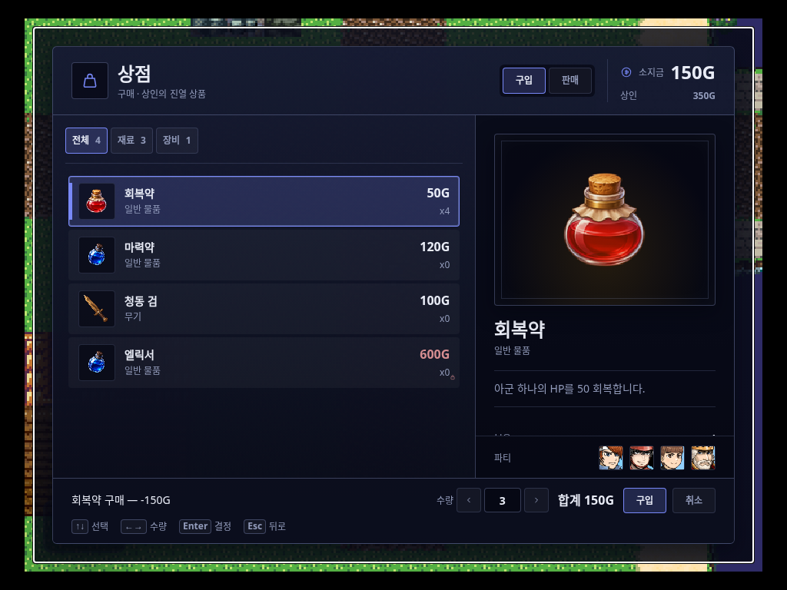
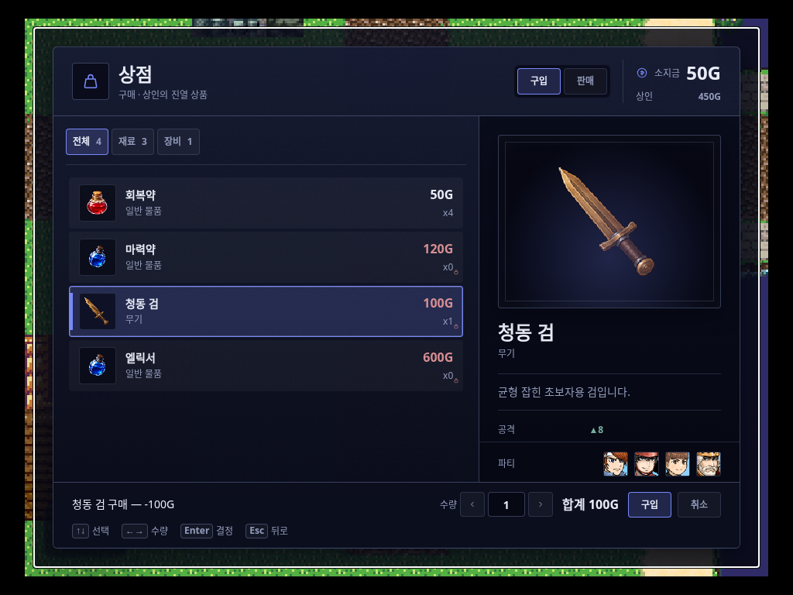
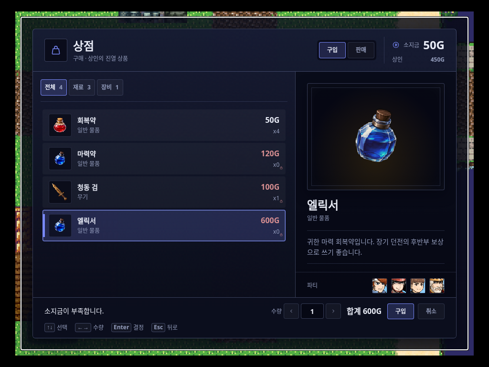
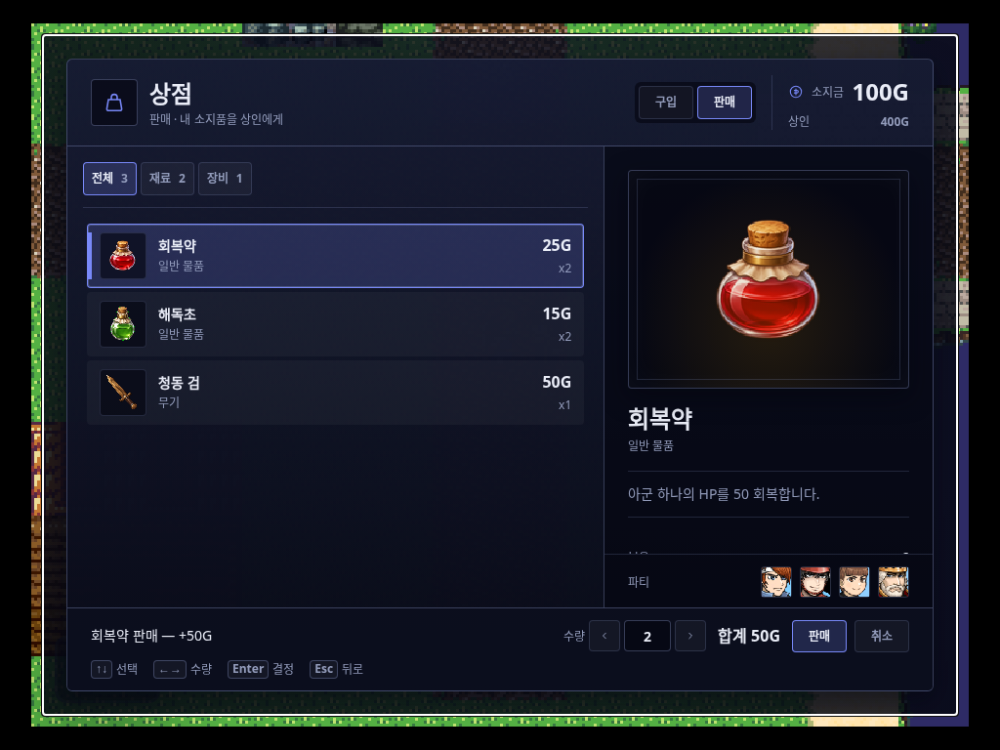
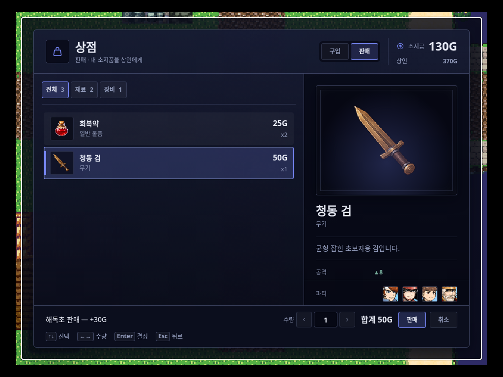
| 상태 | 플레이어 | 상인 | 실제 가방 재고 | 화면 |
|---|---|---|---|---|
| 입구 | 300G | — | {"item_potion": 1, "item_antidote": 2} | 증거 PNG |
| 구매 목록 | 300G | 200G | {"item_potion": 1, "item_antidote": 2} | 증거 PNG |
| 수량 3개 | 300G | 200G | {"item_potion": 1, "item_antidote": 2} | 증거 PNG |
| 회복약 3개 구매 | 150G | 350G | {"item_potion": 4, "item_antidote": 2} | 증거 PNG |
| 실제 장비 선택 | 150G | 350G | {"item_potion": 4, "item_antidote": 2} | 증거 PNG |
| 청동 검 1개 구매 | 50G | 450G | {"item_potion": 4, "item_antidote": 2, "equip_sword": 1} | 증거 PNG |
| 엘릭서 구매 거절 | 50G | 450G | {"item_potion": 4, "item_antidote": 2, "equip_sword": 1} | 증거 PNG |
| 회복약 2개 판매 | 100G | 400G | {"item_potion": 2, "item_antidote": 2, "equip_sword": 1} | 증거 PNG |
| 해독초 마지막 2개 판매 | 130G | 370G | {"item_potion": 2, "equip_sword": 1} | 증거 PNG |
| 구매한 청동 검 판매 | 180G | 320G | {"item_potion": 2} | 증거 PNG |
| 필드 복귀 | 180G | — | {"item_potion": 2} | 증거 PNG |
장비 장착 UI의 신규 장착 동작은 이번 범위에서 실행하지 않았습니다. 실제 장비 구매/재판매와 기존 착용 데이터 보존을 확인했습니다.
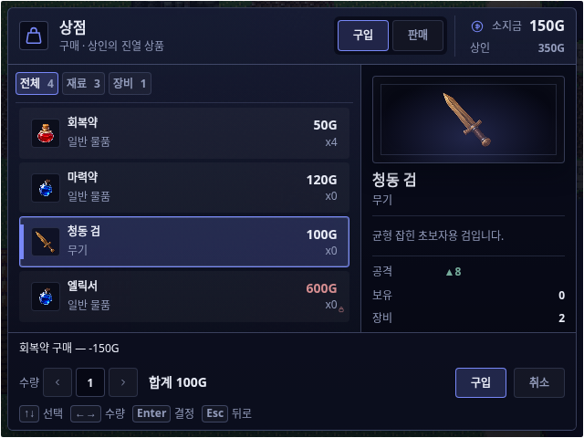
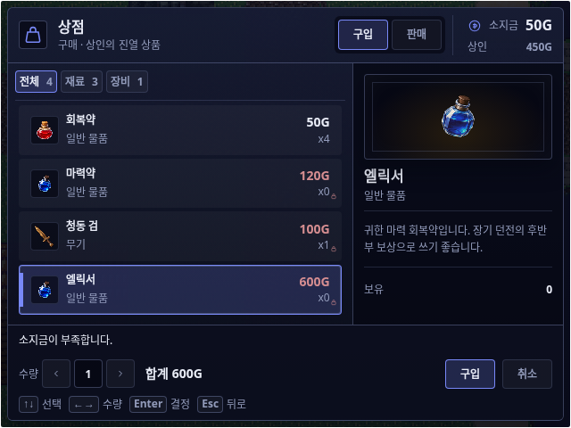
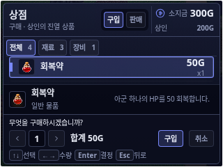
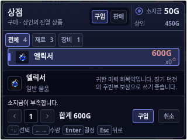
| 실제 뷰포트 | 이미지 | 동일 상태 대조 | 기하 체크 | 판정 근거 |
|---|---|---|---|---|
| 1024 × 768 | 11장 | 금액·재고 대조 11/11 | 11/11 상태 통과 | 측정 대상 화면 내부 · 목록/하단 겹침 없음 |
| 640 × 480 | 11장 | 금액·재고 대조 11/11 | 11/11 상태 통과 | 리사이즈 후 선택 행 노출 유지 |
| 320 × 240 | 11장 | 금액·재고 대조 11/11 | 11/11 상태 통과 | 선택 행·수량·합계·결정·취소 경계 통과 |
체크 범위: 주요 패널·수량·합계·결정/취소·잔액의 양수 크기와 화면 경계, 선택 행의 목록 내부 노출, 목록/하단 겹침, 문서 가로 넘침. 모든 글리프의 가독성이나 대비를 자동 승인한 것은 아닙니다. 1024 측정 · 640 측정 · 320 측정
| 검증 | 실제 결과 | 출처 / 범위 |
|---|---|---|
| 동일 픽스처 BEFORE | 4/4 비트 · 오류 0 | 리드의 원본 코드 캡처, 이 보고서에서 manifest 확인 |
| 동일 픽스처 AFTER | EXIT 0 · 4/4 비트 · 오류 0 | 동일 glass-ui 시나리오를 runRuntimeQa로 실행. 최종 캡처는 출하 번들·로컬 파일 응답 사용 |
| 풍부한 QA 픽스처 | 전체 명령 EXIT 0 | 거래/재고 대조 및 레이아웃 33개 상태 모두 통과. 런타임 오류 0, 네트워크 실패 0. 최종 CSS로 출하 플레이어를 빌드하여 캡처했습니다. |
| 상품/파티 아트 | 캡처 대상 이미지 decode 실패 0 | CSS 배경 리소스를 실제 Image.decode로 확인하고 크기를 기록 |
| 관련 회귀 테스트 | EXIT 0 · 9파일 / 67개 | 리드 제공 결과. shopRuntimeUx, shopFeedbackJuice, shopMerchantGold, shopProcessingCommand, shopHaggleRuntime, shopEconomyValidationAndKey, shopPrice, playerInputCss, runtimeDomTitleGuard |
| 변경 TS 진단 / diff | LSP 진단 없음 / diff --check EXIT 0 | 리드가 제품 TS 2개 및 diff 확인. QA 스크립트 LSP도 별도 진단 없음. |
| 전체 빌드 | npm run build · EXIT 0 | 리드 확인: typecheck:app 및 앱·export-player·standalone-player 최초 빌드 완료. 이후 축소 화면 CSS 수정본은 출하 플레이어 빌드와 33개 실제 상태로 다시 검증 |
| QA 하네스 회귀 | EXIT 0 · 3파일 / 73개 | runtimeQaGate 52개, runtimeQaReport 18개, runtimeQaInstrumentationBoundary 3개 직접 실행 |
| 로컬 HTML 동작 | file:// · 1440 / 390px 통과 | 15개 이미지 decode, 모든 로컬 링크, 비교 버튼, 문서 가로 넘침 없음, 브라우저 오류 0. 검사 기록 |
| HTML 정적 진단 | LSP 사용 불가 | HTML용 Biome 서버 미설치. 의존성 추가 없이 실제 브라우저 검증으로 대체했습니다. |
| CSS 게이트 | EXIT 0 · 기준선 대비 회귀 없음 | budget / graph 검사 통과 |
| 전체 / 표면 게이트 | 전체 실행 중단 · 표면 EXIT 1 | 전체 테스트는 공유 호스트 부하로 장시간 결과 없이 실행되어 중단했습니다. 별도 표면 게이트는 수정하지 않은 changeFace/showPicture AI 입력, M2 이미지 큐, NPC 그래픽 설정의 기존 기준선 불일치로 실패했습니다. 기준선을 갱신하거나 실패를 숨기지 않았습니다. |
| 주관적 시각 승인 | 미실시 | 이 모델에서 이미지 첨부가 보이지 않음. 실제 PNG·브라우저 DOM·기하·리소스 확인으로만 판정했으며 사람의 시각 검토가 필요함. |
구매 후 150G에서 회복약은 3개까지 가능하지만 input.max는 6을 유지했습니다. DOM 행의 data-max-qty를 거래 후 갱신하지 않는 기존 경로입니다. 실제 거래 함수는 잔액을 검사합니다. 이번 시각 변경에서 수정하지 않았습니다.
최초 파생 픽스처에서 100G 청동 검이 0G로 나타났습니다. shopPrice.ts의 기본 가격 조회가 database.items만 보는 기존 경로를 확인했습니다. 최종 QA는 stock.priceOverride를 명시한 실제 장비로 수행하며, 기본 가격 경로가 고쳐졌다고 주장하지 않습니다.
node scripts/runtime-qa.mjs --scenario glass-ui \ --out reports/ingame-shop-2026-09-06/after node scripts/qa/runtime/ingame-shop-report.mjs # 1개 shipping boot → 실제 키보드 거래 → 상태별 3개 viewport 캡처 # 최종 출하 플레이어 빌드 + 세 크기 33개 상태 검증, EXIT 0 npm test -- test/shopRuntimeUx.test.ts test/shopFeedbackJuice.test.ts \ test/shopMerchantGold.test.ts test/shopProcessingCommand.test.ts \ test/shopHaggleRuntime.test.ts test/shopEconomyValidationAndKey.test.ts \ test/shopPrice.test.ts test/playerInputCss.test.ts test/runtimeDomTitleGuard.test.ts # 리드 실행: 9파일, 67개 통과 npm test -- test/runtimeQaGate.test.ts test/runtimeQaReport.test.ts \ test/runtimeQaInstrumentationBoundary.test.ts # QA 실행: 3파일, 73개 통과 npm run build # 리드 실행: EXIT 0
기존 하네스는 지정한 outDir을 지운 후 작성합니다. BEFORE 디렉터리를 재실행 대상으로 사용하지 마세요. QA 스크립트는 qa-fixture.json과 rich/ 증거만 작성하며 원본 프로젝트와 DB를 건드리지 않습니다. 입력 전 MutationObserver를 등록하여 실제 상태 변경을 기다립니다. 고정 sleep이나 우회 클릭은 없습니다.
이번 산출물의 결론 — 인게임 상점의 CSS 중심 시각 구현과 데스크톱 거래 흐름은 실제 shipping player로 확인했습니다. 320×240 목록과 리사이즈 선택 노출은 수정하여 세 크기 모두 검증했습니다. 기존 경제 표시 문제, 전체 테스트 미완료와 이미지 미열람 한계는 남아 있습니다. 이 보고서는 이를 포함한 구현 증거이지, 모든 크기에 대한 무조건적인 출시 승인서가 아닙니다.